交互预览：可选动作、旋转、缩放、调速。
每张动图从左到右：marisa / reimu / house_marisa / marisa_bean / remilia / marisa_tsumuri。离线渲染，使用游戏模型与动作修正资源，表情为该行为在游戏中的表情；不代表实机效果。直接双击打开，不需要服务器。
むーしゃむーしゃ (L03, W1) — 触发：take_food、chew、swallow — 1.2 秒循环
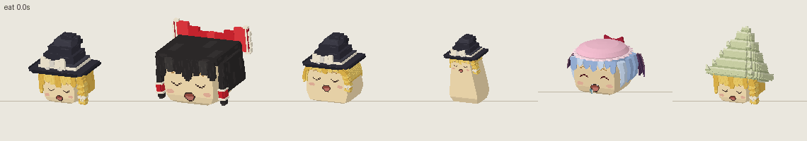
しあわせー after a meal (L03) — 触发：meal_finish — 2.0 秒单次
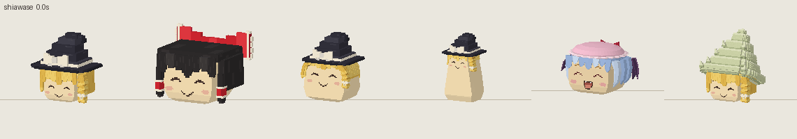
drinking (rules, W1) — 触发：drink — 1.6 秒循环
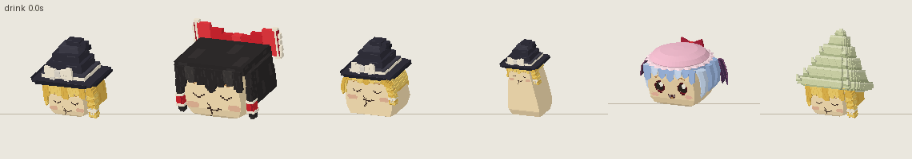
sleep (W1) — 触发：sleep_enter、sleep — 4.0 秒循环
waking with a yawn (W1) — 触发：wake — 1.6 秒单次
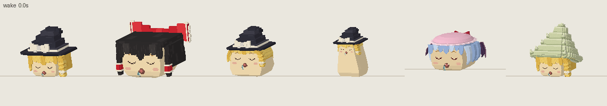
すーりすーり (E06, N2) — 触发：nuzzle、contact RUB — 0.8 秒循环
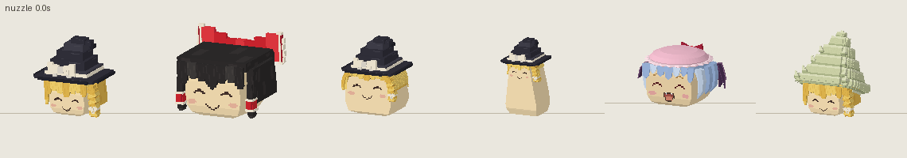
おうた (N3, W3) — 触发：sing — 2.0 秒循环
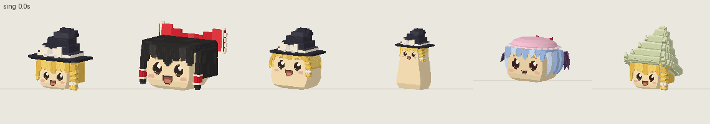
listening with a smile, adults keeping the beat (N3, W2) — 触发：listen_song、exercise_watch — 2.4 秒循环
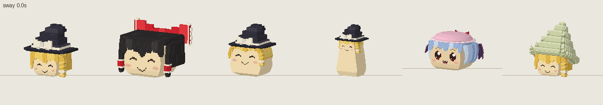
sumo and bullying pushes (special-events, N1) — 触发：sumo_push、bully_peer — 1.2 秒循环
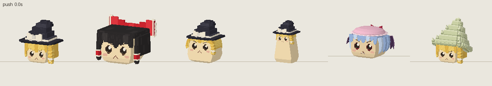
ゆっくりしていってね (L03, N1) — 触发：reaction hello / peer / known_peer / caregiver / introduced / gentle — 1.4 秒单次
shivering and begging, fear (special-events, events) — 触发：reaction afraid / wounded / cold — 0.5 秒循环
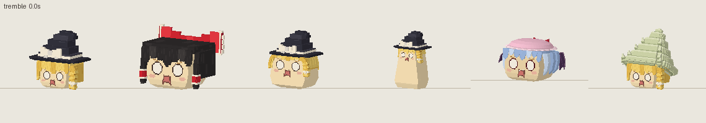
withdrawn after losing the accessory (TM02, personality-social) — 触发：reaction lost_accessory / family_died / lost_parent、idle without accessory — 4.0 秒循环
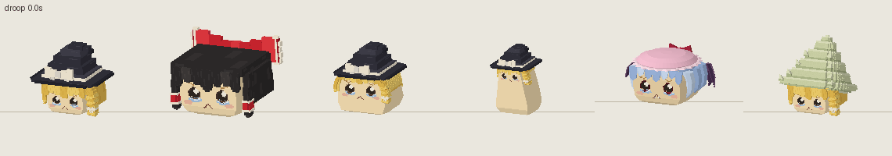
searching for family, keeping watch (events, family_follow) — 触发：search_family、wait_child — 4.0 秒循环
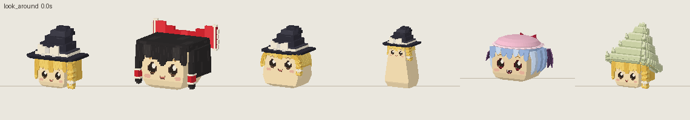
a short wash makes it happy (rules, L01) — 触发：reaction washed — 1.2 秒单次
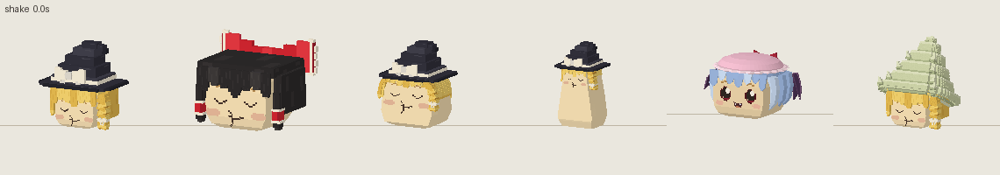
curled in the hat, body tensed to keep it steady (aquatic Marisa, L25) — 触发：riding a hat boat — 3.0 秒循环
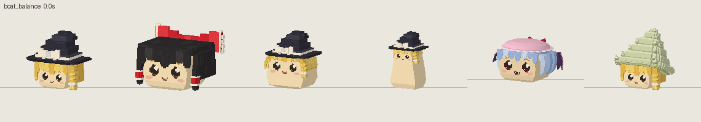